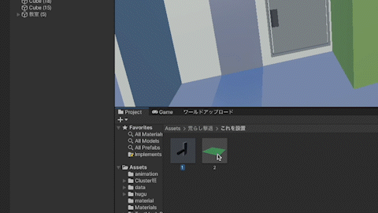
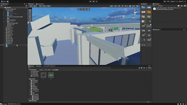
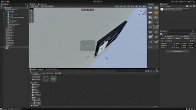
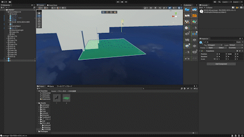

ㅤㅤ
Step2.回答したファイルの中の 荒らし撃退.unitypackage をunityに取り込む。

Step3.取り込んだデータの これを設置 という名前のファイルの中にある1.2をヒエラルキーに出す。
ㅤㅤ
Step4. 1のデータを目立たないがアクセスしやすい壁に寄せる。
ㅤㅤ
Step5. 1のデータを壁にギリギリつくぐらいのところで設置し、高さはアバターの目線に合わせる。
ㅤㅤ
Step6. 2のデータのポジションのY軸を100にする(空の見えない位置)
ㅤㅤ

ㅤㅤ
#cluster #荒らし
— たんたん (@om321icloudcom2) August 8, 2022
出来れば拡散リツイートを pic.twitter.com/UIZjO265Io